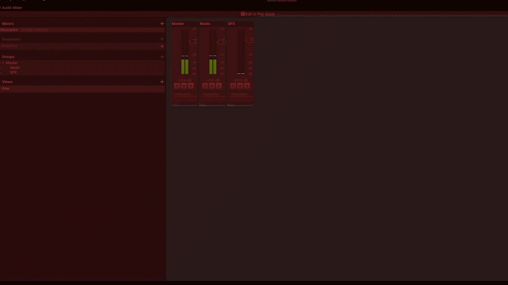

Over Zhousands es un juego de estrategia en tiempo real desarrollado por Sick Gecko con el motor de Unity 6, donde el jugador controlará un ejercito de zombis el cual lo usará para atacar a los humanos, conseguir recursos y mejorar y decorar tu propia base.
Mis responsabilidades fueron:

Programar el sistema de combate

Programar el sistema de cámara y la rotación de elementos 2D

Programar el sistema de sonido y la gestión de audio en el juego
alonsorivasalcobendas@gmail.com